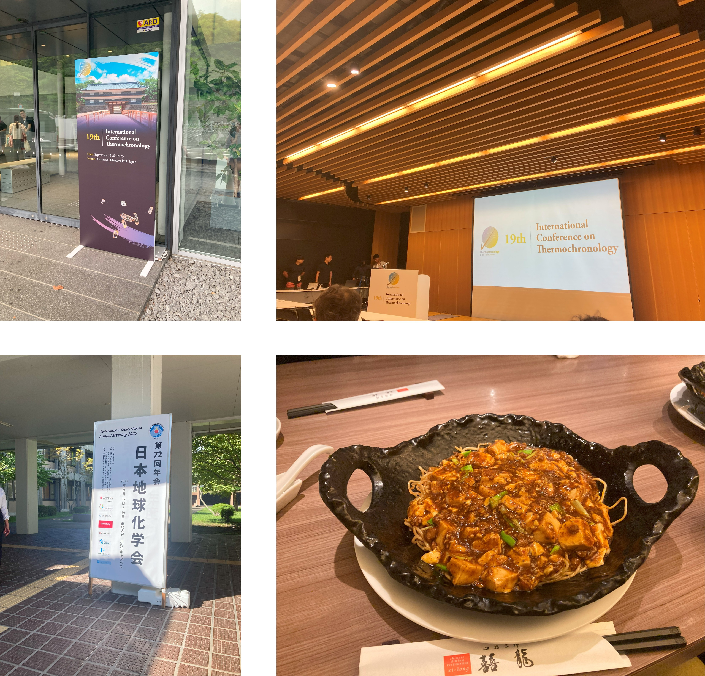
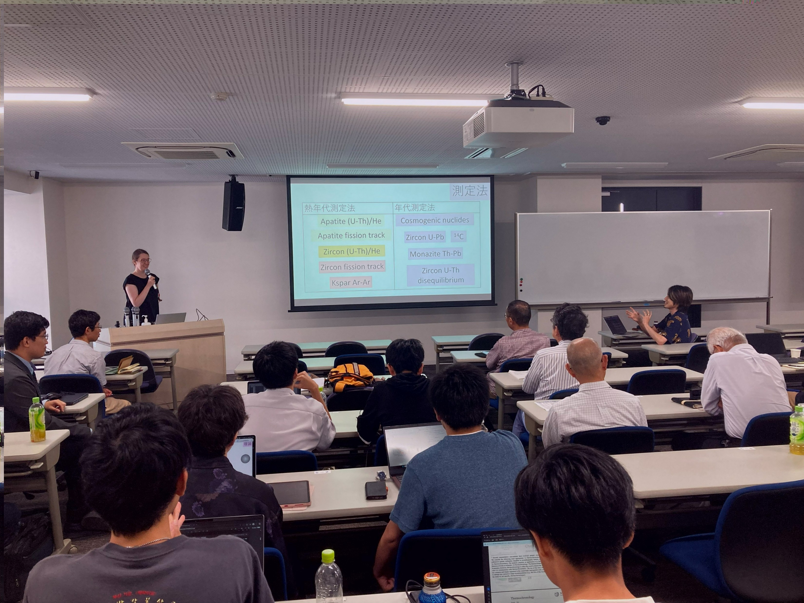
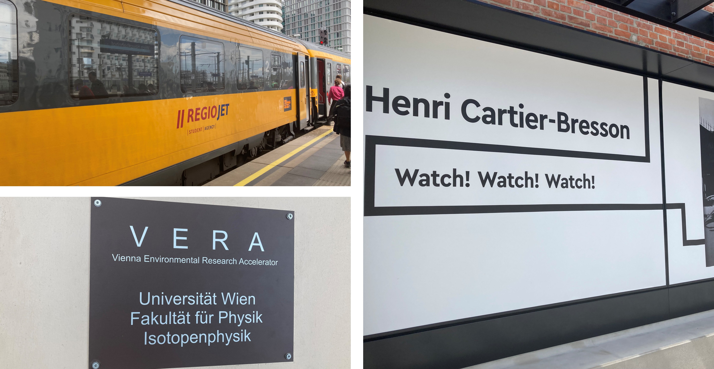
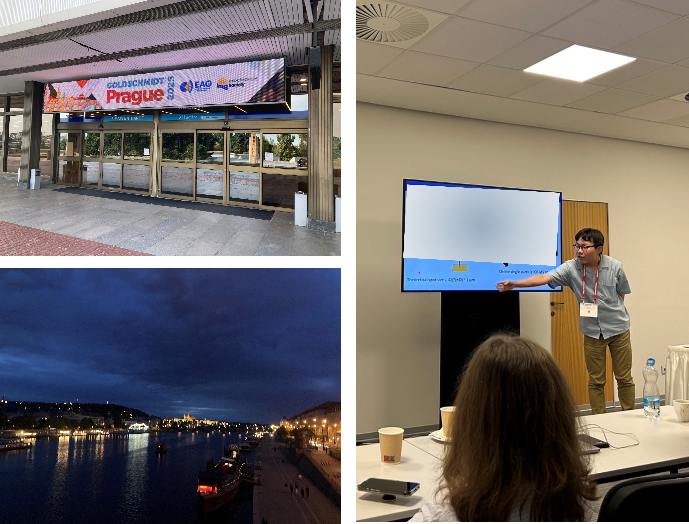
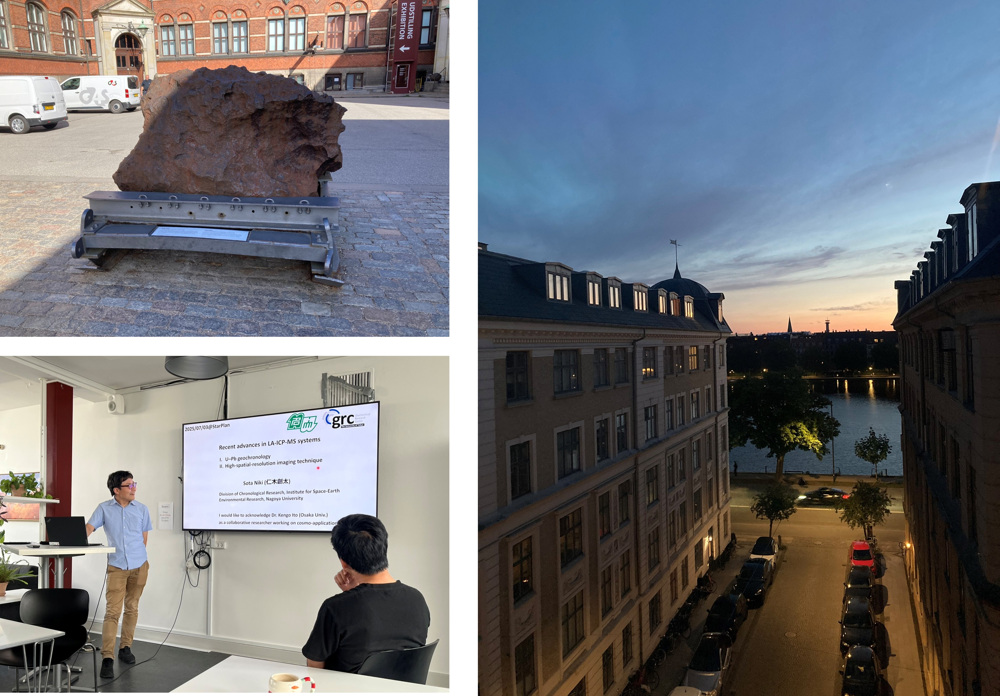
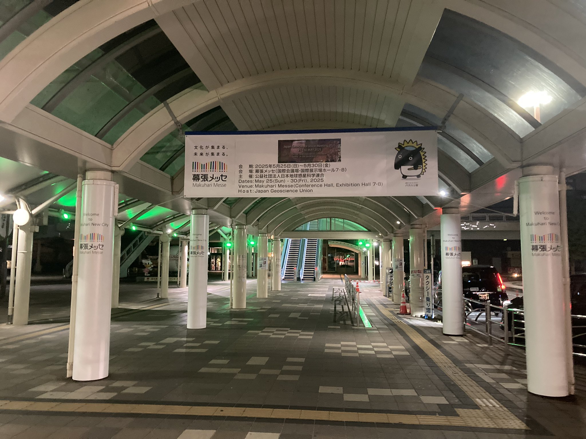

2025年
2024年
□2025年
秋の学会ウィーク(2025/9)
今年は国際熱年代学会@金沢と日本地球化学会@仙台を梯子しました。名古屋→金沢→仙台→名古屋の移動はちょっと大変でした。金沢では自分の発表に対して反響があり、共同研究に繋がりそうなディスカッションができて楽しかったです。
仙台の地球化学会では主催した学生懇親会が大盛況でした(60名以上の参加者)。学生の会をいつまでも自分が運営してるのも違うので、そろそろバトンタッチの時期かなと思います。東大地殻化学の学生時代にお世話になった宮嶋さんと鍵先生がダブル受賞で大変めでたい年会でした。仙台名物（？）の麻婆焼きそば美味しかったです。
- 
第二回日本年代測定ワークショップ(2025/8)
8/30に二回目となる年代測定ワークショップを名大で主催しました。日本全国から40名を越える参加者が集まり、年代測定について議論する熱い会となりました。
欧州出張(2025/7)
Goldschmidtの後はウィーンへ行きました。プラハからはRegiojetが運航している列車で4時間ちょっとで着きます。ウィーン大学の加速器質量分析グループとこれからの研究について打ち合わせを行いました。オフの日にたまたま訪れたFOTO ARSENAL WIENのカルティエ＝ブレッソンに関する特別展がとても良かったです。
Goldschmidt2025(一番大きな宇宙地球化学の国際学会)inプラハが開幕しました。0日目はpre-conference workshopが開かれ、私はICP-MSを使った粒子分析のワークショップで最近の研究成果について紹介しました。応用研究の発表が求められていた雰囲気で、分析の根本に近い話をしてしまってウケが悪かったかなと反省。日本で足元を固める研究に終始している間にも世界の応用研究は進んでいるんだなとしみじみ思いました。
コペンハーゲン大学のStarPlanグループでLA-ICP-MSに関するセミナー発表を行いました。コペンハーゲン大学には増田雄樹君がポスドク研究員として在籍しています。見学に行ったときは多重検出方式のICP質量分析装置がほぼフル稼働！ポスドクもたくさんいて大変活気がありました。発表中に2か所ネタを仕込んだところで笑いを取れたので満足でした。
JpGU2025(5/26–30)：月曜に東京入りし、金曜までみっちり学会ウィークでした。今年は火曜日(5/27)がハイブリッド年代学セッション開催日でした。口頭・ポスターいずれもハイレベルな発表ばかりで自分も足踏みしてはいられないなと痛感しました。JpGU会場でこれから始める共同研究の打ち合わせも完了し、満足の一週間でした。
